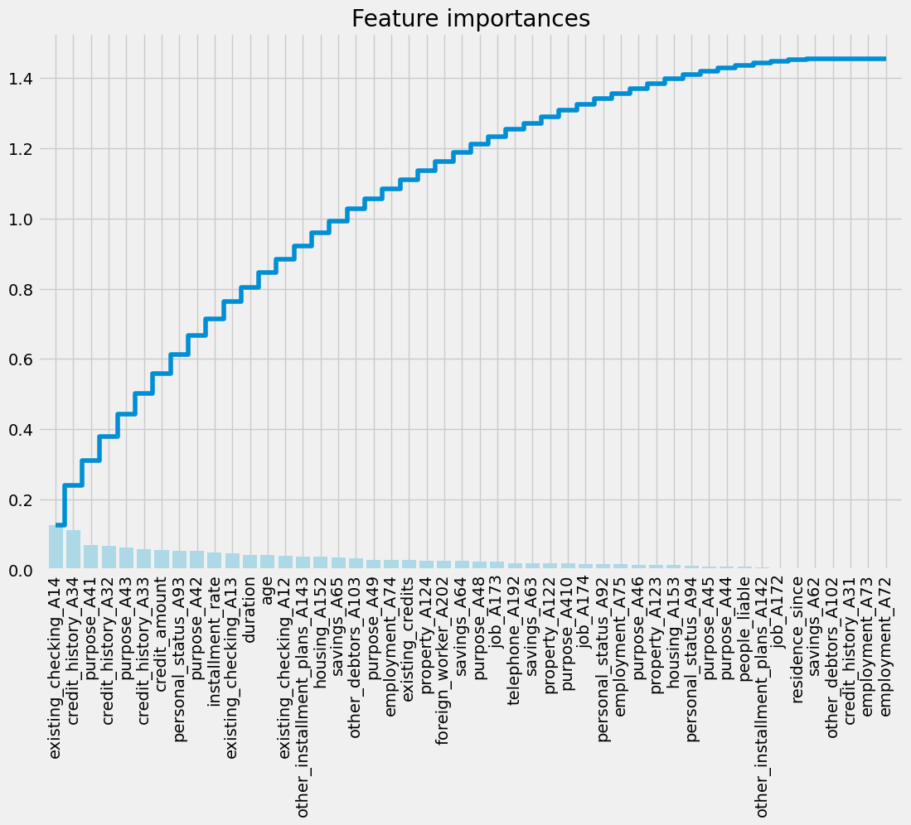
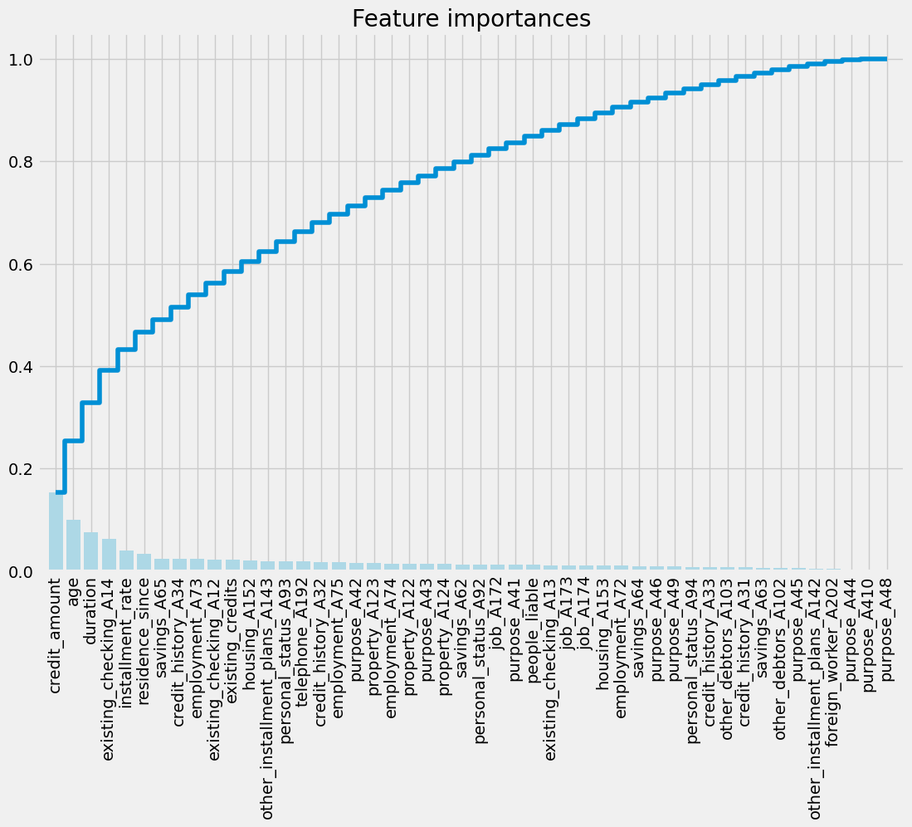
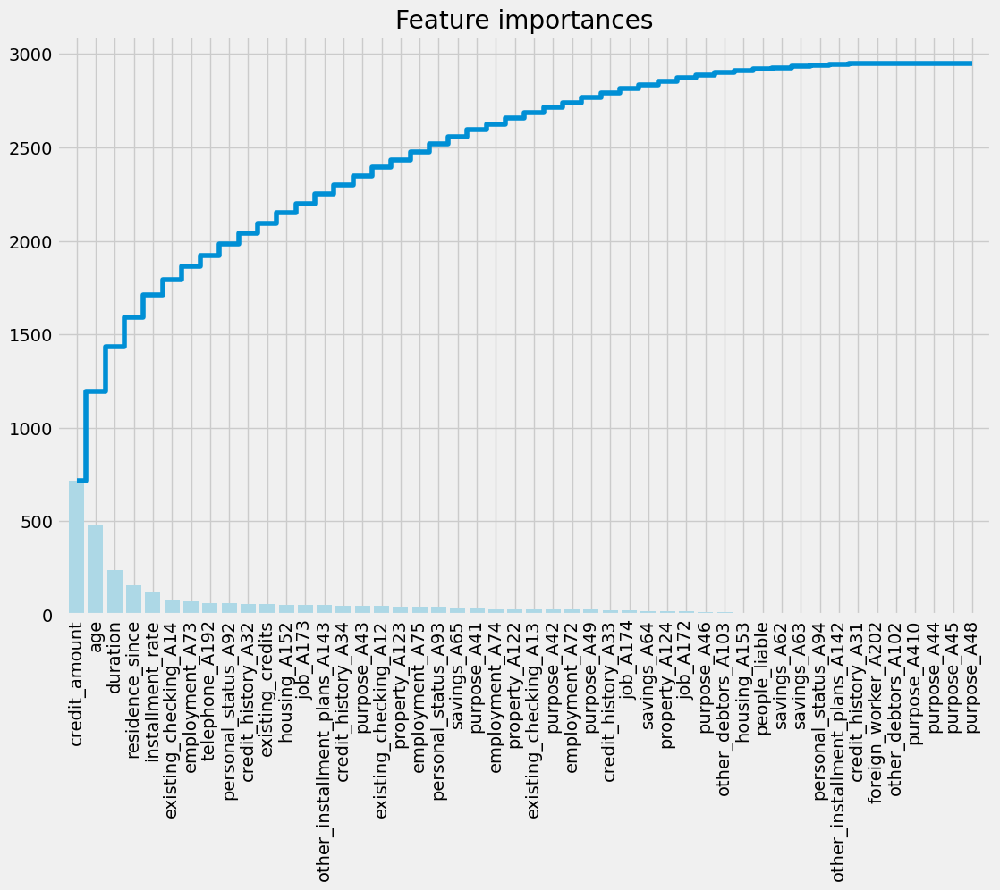
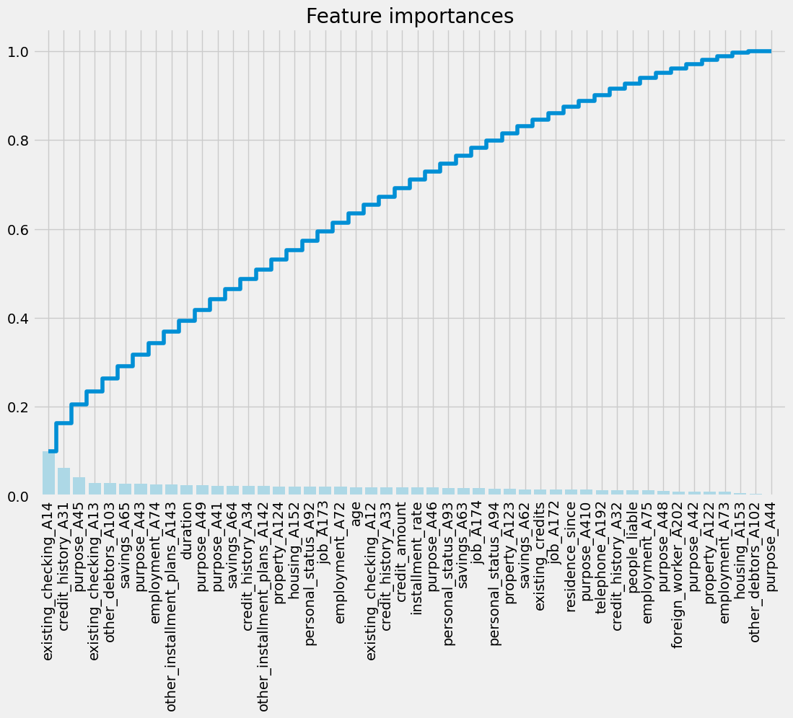

import numpy as np
import matplotlib.pyplot as plt
def plot_feature_importance(importances, names):
plt.style.use('fivethirtyeight')
feat_names = np.array(names)
indices = np.argsort(importances)[::-1]
fig = plt.figure(figsize=(12, 8))
plt.title("Feature importances")
plt.bar(range(len(indices)), importances[indices], color='lightblue', align="center")
plt.step(range(len(indices)), np.cumsum(importances[indices]), where='mid', label='Cumulative')
plt.xticks(range(len(indices)), feat_names[indices], rotation='vertical', fontsize=14)
plt.xlim([-1, len(indices)])
plt.show()Visualize feature importances
Define function plot feature importance
Get example data (german credit)
import pandas as pd
from sklearn.model_selection import train_test_split
# Load the German Credit Data
data_url = "https://archive.ics.uci.edu/ml/machine-learning-databases/statlog/german/german.data"
column_names = ['existing_checking', 'duration', 'credit_history', 'purpose', 'credit_amount', 'savings',
'employment', 'installment_rate', 'personal_status', 'other_debtors', 'residence_since',
'property', 'age', 'other_installment_plans', 'housing', 'existing_credits', 'job', 'people_liable',
'telephone', 'foreign_worker', 'class']
data = pd.read_csv(data_url, delimiter=' ', names=column_names)
# Preprocess the data
X = data.drop('class', axis=1)
y = data['class']
X = pd.get_dummies(X, drop_first=True)
X_train, X_test, y_train, y_test = train_test_split(X, y, test_size=0.2, random_state=42)
y_train[y_train == 2] = 0
y_test[y_test == 2] = 0data.info()<class 'pandas.core.frame.DataFrame'>
RangeIndex: 1000 entries, 0 to 999
Data columns (total 21 columns):
# Column Non-Null Count Dtype
--- ------ -------------- -----
0 existing_checking 1000 non-null object
1 duration 1000 non-null int64
2 credit_history 1000 non-null object
3 purpose 1000 non-null object
4 credit_amount 1000 non-null int64
5 savings 1000 non-null object
6 employment 1000 non-null object
7 installment_rate 1000 non-null int64
8 personal_status 1000 non-null object
9 other_debtors 1000 non-null object
10 residence_since 1000 non-null int64
11 property 1000 non-null object
12 age 1000 non-null int64
13 other_installment_plans 1000 non-null object
14 housing 1000 non-null object
15 existing_credits 1000 non-null int64
16 job 1000 non-null object
17 people_liable 1000 non-null int64
18 telephone 1000 non-null object
19 foreign_worker 1000 non-null object
20 class 1000 non-null int64
dtypes: int64(8), object(13)
memory usage: 164.2+ KBfrom sklearn.preprocessing import StandardScaler
# Standardize features
scaler = StandardScaler()
X_train_scaled = scaler.fit_transform(X_train)
X_test_scaled = scaler.transform(X_test)Visualize feature importances using a Lasso regression
from sklearn.linear_model import LassoCV
# Use LassoCV for feature selection
model_lasso = LassoCV(alphas=[0.1, 1, 0.001, 0.0005]).fit(X_train_scaled, y_train)
# Visualize feature importances using the function
plot_feature_importance(np.abs(model_lasso.coef_), X_train.columns)
Visualize feature importances using a Random Forest classifier
from sklearn.ensemble import RandomForestClassifier
# Use RandomForestClassifier for feature importance
clf = RandomForestClassifier(n_estimators=10, random_state=123)
clf.fit(X_train_scaled, y_train)
names = X_train.columns
importances = clf.feature_importances_
# Call the plotting function
plot_feature_importance(importances, names)
Visualize feature importances using a LightGBM classifier
import lightgbm as lgb
# Use LightGBM classifier
clf = lgb.LGBMClassifier(n_estimators=100, random_state=123)
clf.fit(X_train_scaled, y_train)
# Get feature importances
importances = clf.feature_importances_
names = X_train.columns
# Call the plotting function
plot_feature_importance(importances, names)
Visualize feature importances using a XGBoost classifier
import xgboost as xgb
# Use XGBoost classifier
clf = xgb.XGBClassifier(n_estimators=100, random_state=123)
clf.fit(X_train_scaled, y_train)
# Get feature importances
importances = clf.feature_importances_
names = X_train.columns
# Call the plotting function
plot_feature_importance(importances, names)